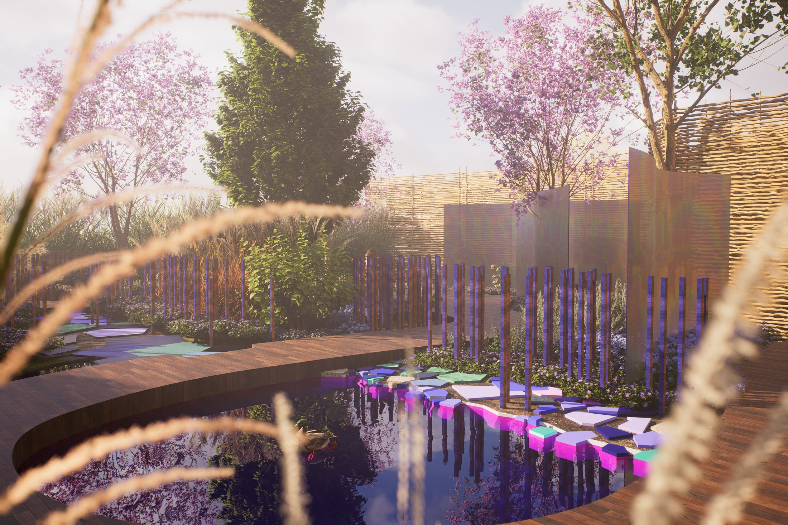

Effet Morpho
Comment un papillon tropical peut-il réinventer un site classé au patrimoine mondial ?
- Lieu
- Saline Royale d'Arc-et-Senans, France
- Contexte
- Concours — Festival des jardins
- Thème
- Biomimétisme — le papillon Morpho
- Rôle
- Conception, rendus et vidéo 3D
Conçu pour le Festival des jardins de la Saline Royale d'Arc-et-Senans — œuvre maîtresse de Claude-Nicolas Ledoux — ce projet de concours s'inspire du papillon Morpho, dont l'irisation bleue ne provient d'aucun pigment mais de la diffraction de la lumière à travers une architecture nanométrique.
Ce phénomène optique devient le principe générateur du projet paysager : un espace qui change selon qui le traverse, selon l'heure, selon la saison. Des strates végétales superposées filtrent et colorent la lumière rasante, des cheminements orientés révèlent des vues changeantes, une palette chromatique irisée — reflets bleu-vert, nuances dorées, ombres profondes — dialogue avec la pierre ocre de Ledoux.
Comme l'aile du Morpho, le site ne montre jamais le même visage.

Des parois en plexiglas recouvertes d'un film dichroïque tamisent la lumière solaire et projettent des reflets changeants et irisés sur les parcours, ornés d'une mosaïque de carreaux récupérés. Une mare légèrement teintée de bleu est bordée d'une série de piquets asymétriques, peints en bleu sur trois faces et en brun sur la quatrième : en se déplaçant, le visiteur déclenche un effet optique où les couleurs apparaissent ou disparaissent selon son point de vue, rendant l'expérience spatiale totalement évolutive.


